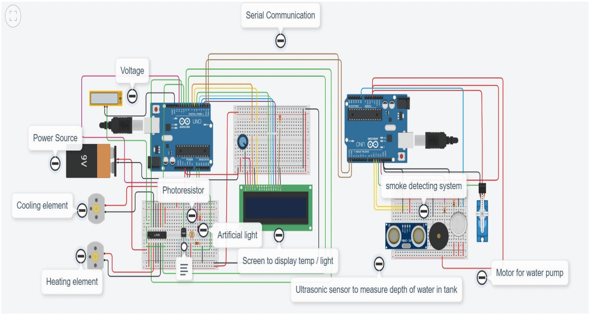

Greenhouse Management System
An Atmega328-based monitoring and control system that automates the climate conditions a greenhouse depends on.
The problem
Greenhouses only work if a few conditions stay in range: temperature can't drop too low, humidity has to stay in a band that avoids excess crop transpiration, and soil moisture needs active management. Doing that by hand is labour-intensive, and a lot of small farmers run these checks intuitively instead of systematically, which is part of why greenhouse crops underperform.
How it works
The system is powered by an Atmega328 microcontroller wired to a temperature sensor, a soil moisture sensor, an LDR light sensor, an LCD display, a 12V DC fan, a bulb, and a pump.
- The temperature sensor drives the DC fan: it switches on above a threshold and off once the temperature drops back down.
- The soil moisture sensor drives the pump: as moisture drops, the pump turns on to compensate.
- The LDR sensor detects low light and switches the bulb on automatically.
The LCD gives a live readout of the greenhouse's conditions, so the whole loop runs without someone having to check on it manually.

Why it matters
Automating temperature, humidity, and soil moisture control removes the guesswork from greenhouse management and makes it possible to catch problems before they affect crop yield. Greenhouses matter for food security and for the economics of small farms, so a reliable, low-cost way to manage them has real value beyond the classroom project it started as.